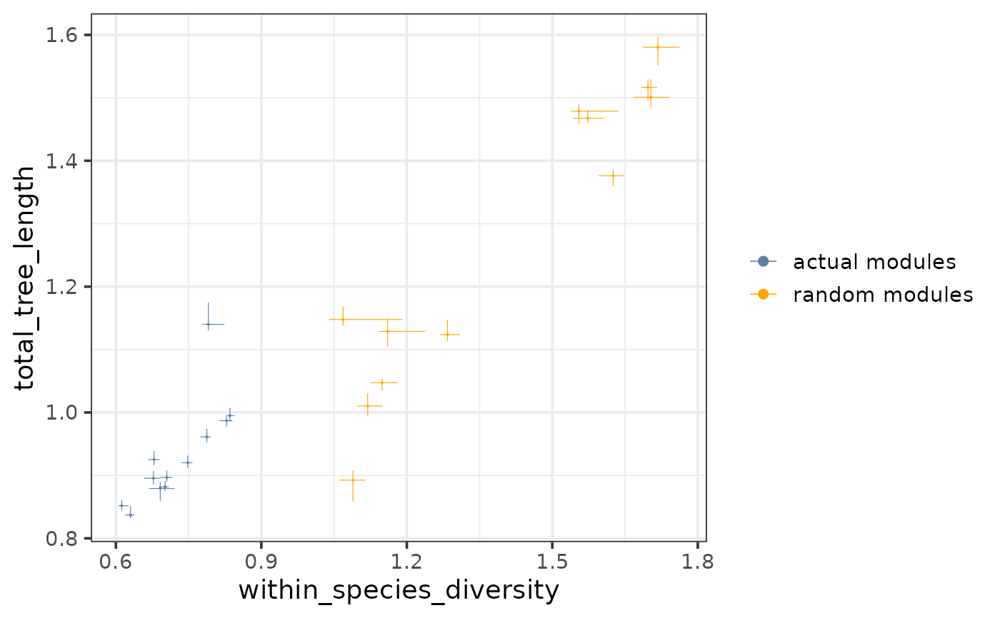

Plots a chosen tree-based statistic (e.g. total tree length) against another (e.g. within-species diversity) for all pruned modules and if provided, all random modules.
Usage
plotTreeStats(
tree_stats,
random_tree_stats = NULL,
stats = c("within_species_diversity", "total_tree_length"),
colors = NULL,
font_size = 14,
point_size = 0.05,
point_alpha = 1
)Arguments
- tree_stats
Data frame of the tree statistics for the actual (pruned) modules. Required columns:
- regulator
Character, transcriptional regulator.
- module_size
Integer, the numer of target genes assigned to a regulator (only needed if the data points are desired to be colored by module size).
- {{nameOfStat}}
Numeric, 2 columns containing the tree statistics to be plotted against each other.
- random_tree_stats
Data frame of the tree statistics for the random modules (optional). If provided, the following columns are required:
- regulator
Character, transcriptional regulator.
- {{nameOfStat}}
Numeric, 2 columns containing the tree statistics to be plotted against each other.
- stats
Character vector of length 2, the names of the columns containing the 2 statistics that should be plotted against each other (default: c("within_species_diversity", "total_tree_length"), another useful option is to plot the species-to-other branch length against the diversity for a chosen species). The 1st element of the vector will be plotted on the x-axis and the 2nd element of the vector will be plotted on the y-axis.
- colors
Character vector, either the colors to visualize the module sizes (if only
tree_statsis provided), or the colors to visualize the actual and random modules (if bothtree_statsandrandom_tree_statsare provided). In the first case, the vector can contain any number of colors that will be passed on to and converted into a continuous scale byscale_color_gradientn. In the second case, the vector should contain 2 colors for the actual and random modules.- font_size
Numeric, font size (default: 14).
- point_size
Numeric, the size of the points (default: 0.3).
- point_alpha
Numeric, the opacity of the points (default: 1).
Value
A scatterplot as a ggplot object showing a chosen tree-based statistic (e.g. total tree length) against another (e.g. within-species diversity) for all pruned modules and if provided, all random modules.
Details
As part of the CroCoNet approach, pairwise module preservation scores are calculated between clones, both within and across species (see calculatePresStats) and neighbor-joining trees are reconstructed based on these preservation scores per module (see convertPresToDist and reconstructTrees). The tips of the resulting tree represent the clones and the branch lengths represent the dissimilarity of module topology between the networks of 2 clones. Various statistics can be defined based on these trees such as total tree length, total within-species diversity, diversity of a species and species-to-other branch length (see calculateTreeStats).
These tree-based statistics can be used to pinpoint conserved and diverged modules. First, a linear regression model is fit between the total tree length and within-species diversity (in case the focus of interest is conservation and overall divergence) or between the species-to-other branch length and the diversity of a species (in case the focus of interest is the species-specific divergence), and then outlier data points are identified that do not follow the general linear trend (see fitTreeStatsLm and findConservedDivergedModules).
This function visualizes the relationship of 2 tree-based statistics. This can be an informative check for the pairs of statistics that are used to measure cross-species conservation - total-tree length VS within-species diversity (default) or species-to-other branch length VS the diversity of a species - before fitting a linear regression model between them.
If random_tree_stats is provided, the actual and the random modules are plotted together, shown in 2 different colors. Most tree-based statistics (especially the ones measuring diversity) are expected to be lower for the actual modules than for the random modules, therefore the 2 sets of modules are expected to cluster separately on the plot with the actual modules located towards the lower values.
If random_tree_stats is not provided, only the actual modules in tree_stats are shown on the plot. In this case, if the column "module_size" is present in tree_stats, the data points are colored by module size.
See also
Other functions to plot tree-based statistics:
plotTreeStatDistributions()
Examples
plotTreeStats(tree_stats,
random_tree_stats,
c("within_species_diversity", "total_tree_length"))
